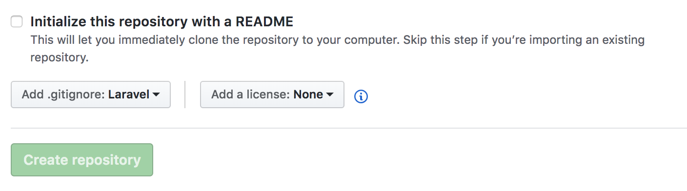

프로젝트 생성하여 유지 관리하기 위해 GitHub 계정 생성 및 프로젝트 진행에 사용할 데이타 베이스를 로컬에 설치 하도록 하겠습니다.
Github 계정 가입
1. Gitgub 공식사이트 우측 상단이 Sign Up클릭

2. 개인 / 회사 가입을 구분하여 가입(지금은 연동 테스트를 위해 개인 Free로 가입)

3. 입력한 이메일 주소로 온 메일 확인
4. 오른쪽 중간에 있는 New repository 클릭

5. 원하는 repository 명 입력 후 Create repository 클릭 완료!(저는 laraveBoard로 하겠습니다)
6. 생성한 저장소에 Larabel 프로젝트 저장할 수 있도록 설정! Gitgub 관련한 다른 사항 들은 별도로 여러 매체를 통해 찾아 보시면 됩니다.

MariaDB 세팅 On Mac
마리아 DB(Maria db)는 기존 Mysql에서 파생된 제품입니다.

설치
1. 애플의 통합개발환경인 엑스코드(Xcode) 설치합니다. 앱스토어에서 다운로드 또는 (https://itunes.apple.com/kr/app/xcode/id497799835?mt=12)에서 다운로드 하여 설치합니다.

2. 오픈소스 패키지를 손쉽게 관리할 수 있도록 도와 주는 Homebrew를 설치 합니다. 이를 이용하면 마리아 DB 는 물론 각종 패키지를 다운로드하거나 업데이트 할 수 있습니다.

$ /usr/bin/ruby -e "$(curl -fsSL https://raw.githubusercontent.com/Homebrew/install/master/install)"
$ brew update
$ brew install mariadb
brew install mariadb 명령어를 사용하여 다음과 같이 설치하면 의존성 패키지인 openssl등을 포함하여 자동으로 설치됩니다.
3. 설치 완료 후 MariaDB를 다음과 같이 컨트롤 할 수 있습니다.
$ mysql.server status # 상태확인
$ mysql.server stop # 정지
$ mysql.server start # 시작
4. 시스템 새 시작 후에는 위의 명령을 통해 다시 실해을 해야 하기 때문에 MariaDB가 자동으로 실행될 수 있도록 MariaDB 스타트업 plist를 LaunchAgents 디렉토리에 링크시킵니다.
$ ln -sfv /usr/local/opt/mariadb/*.plist ~/Library/LaunchAgents
/Users/laravel/Library/LaunchAgents/homebrew.mxcl.mariadb.plist -> /usr/local/opt/mariadb/homebrew.mxcl.mariadb.plist
위의 방법으로 설정 완료 후에는 MariaDB 종료 시 자동으로 재 실행이 되기 때문에 관리상 다음의 내용도 확인할 필요가 있습니다.
$ launchctl load ~/Library/LaunchAgents/homebrew.mxcl.mariadb.plist # 실행하기
$ launchctl unload ~/Library/LaunchAgents/homebrew.mxcl.mariadb.plist #종료하기
5. 설치가 완료되었습니다. MariaDB에 접속 하도록 하겠습니다.
$ mysql -uroot
Welcome to the MariaDB monitor. Commands end with ; or \g.
Your MariaDB connection id is 254
Server version: 10.2.14-MariaDB Homebrew
Copyright (c) 2000, 2018, Oracle, MariaDB Corporation Ab and others.
Type 'help;' or '\h' for help. Type '\c' to clear the current input statement.
MariaDB [(none)]>
위 내용이 나오지 않는다면 에러 내용을 찾기 보다는 다시 처음부터 진행하는 것을 추천드립니다.
6. MariaDB에 데이타 베이스를 생성합니다.
MariaDB [(none)]> create database laravel; -- laravel 라는 명을 가지는 데이터베이스를 생성합니다.
Query OK, 1 row affected (0.00 sec)
MariaDB [(none)]> show databases; -- 데이터베이스 목록을 확인합니다.
+--------------------+
| Database |
+--------------------+
| laravel |
| information_schema |
| mysql |
| performance_schema |
| test |
+--------------------+
5 rows in set (0.00 sec)
MariaDB [(none)]>
7. 비밀번호가 levaral인 laraveler 계정을 생성합니다.
MariaDB [(none)]> create user 'laraveler'@'localhost' identified by 'levaral';
Query OK, 0 rows affected (0.02 sec)
laraveler 계정에게 laravel 데이터베이스의 모든 사용권한을 부여한다.
-- '%' 대신 localhost를 사용할 경우 외부에서 접속 불가
MariaDB [(none)]> grant all privileges on laravel.* to laraveler@'%';
Query OK, 0 rows affected (0.38 sec)
-- 권한설정을 새로 반영합니다.
MariaDB [(none)]> flush privileges;
Query OK, 0 rows affected (0.01 sec)
8. 생성한 계정을 확인 합니다.
$ mysql -u laraveler -p
Enter password: *******
Welcome to the MariaDB monitor. Commands end with ; or \g.
Your MariaDB connection id is 9
Server version: 10.2.14-MariaDB mariadb.org binary distribution
Copyright (c) 2000, 2015, Oracle, MariaDB Corporation Ab and others.
Type 'help;' or '\h' for help. Type '\c' to clear the current input statement.
MariaDB [(none)]>
9. 세팅된 DB에 인코딩 설정을 확인 해 보면 latin1과 utf8이 썩여 있음을 확인 할 수 있습니다. 우리는 인코딩 관련된 세팅을 utf8로 통일 하여 이후 진행에서
글자가 깨지는 것을 방지 하도록 하겠습니다.
MariaDB [(none)]> show variables like 'c%';
+--------------------------+----------------------------+
| Variable_name | Value |
+--------------------------+----------------------------+
| character_set_client | utf8 |
| character_set_connection | utf8 |
| character_set_database | latin1 |
| character_set_filesystem | binary |
| character_set_results | utf8 |
| character_set_server | latin1 |
| character_set_system | utf8 |
| character_sets_dir | /usr/share/mysql/charsets/ |
| collation_connection | utf8_general_ci |
| collation_database | latin1_swedish_ci |
| collation_server | latin1_swedish_ci |
| completion_type | NO_CHAIN |
| concurrent_insert | AUTO |
| connect_timeout | 10 |
+--------------------------+----------------------------+
14 rows in set (0.01 sec)
위 상태 확인 후 다음과 같이 설정 변경을 합니다.
MariaDB [(none)]> SET character_set_client = utf8;
MariaDB [(none)]> SET character_set_results = utf8;
MariaDB [(none)]> SET character_set_connection = utf8;
MariaDB [(none)]> ALTER DATABASE laravel DEFAULT CHARACTER SET utf8;
MariaDB [(none)]> show variables like 'c%';
+--------------------------+---------------------------------------------------------+
| Variable_name | Value |
+--------------------------+---------------------------------------------------------+
| character_set_client | utf8 |
| character_set_connection | utf8 |
| character_set_database | utf8 |
| character_set_filesystem | binary |
| character_set_results | utf8 |
| character_set_server | utf8 |
| character_set_system | utf8 |
| character_sets_dir | /usr/local/Cellar/mariadb/10.2.14/share/mysql/charsets/ |
| check_constraint_checks | ON |
| collation_connection | utf8_general_ci |
| collation_database | utf8_general_ci |
| collation_server | utf8_general_ci |
| completion_type | NO_CHAIN |
| concurrent_insert | AUTO |
| connect_timeout | 10 |
+--------------------------+---------------------------------------------------------+
15 rows in set (0.05 sec)